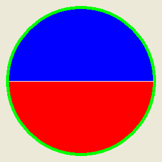

FillArea()
语法
FillArea(x, y, BorderColor [, Color])概要
Fill an arbitrary area starting from x,y position until the BorderColor is encountered. This is useful for filling any kind of shape.
参数
x, y The location at which the filling should start. BorderColor The color which should be considered the border to stop the filling. If this parameter is set to -1 then the area defined by the color found at the (x,y) coordinates will be filled, and filling stops at any color that differs from the starting point.
On 32-bit images, the alpha channel is ignored when determining whether a pixel counts as a border pixel or not.Color (可选) The color to be used for filling the pixels. 如果未指定此参数，将使用与FrontColor()设置的默认颜色。这种颜色可以使用RGB或RGBA格式。
返回值
无.
备注
此命令不能与PrinterOutput()同时使用。
示例
If OpenWindow(0, 0, 0, 300, 300, "2DDrawing Example", #PB_Window_SystemMenu | #PB_Window_ScreenCentered) If CreateImage(0, 300, 300) And StartDrawing(ImageOutput(0)) Box(0, 0, 300, 300, RGB(255, 255, 255)) Circle(150, 150, 125 ,$00FF00) Circle(150, 150, 120 ,$FF0000) LineXY(30, 150, 270, 150, $FFFFFF) FillArea(150, 155, -1, $0000FF) ; Replace -1 by $00FF00, and compare the result StopDrawing() ImageGadget(0, 0, 0, 300, 300, ImageID(0)) EndIf Repeat Event = WaitWindowEvent() Until Event = #PB_Event_CloseWindow EndIf

参阅
FrontColor()
已支持操作系统
所有